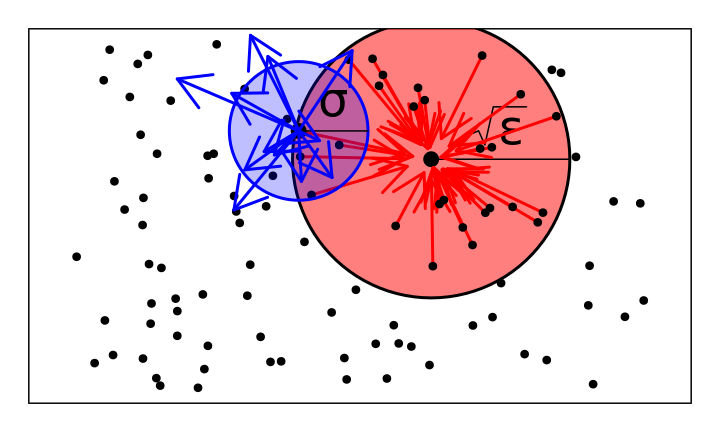

How do lineages move, anyways?
Next: continuous space (and, time).
The model:
- \(N\): scaling factor for density
- \(\eta_t\): point measure with mass \(1/N\) for each individual on \(\mathbb{R}^d\)
- \(\gamma(x, \eta_t)\): per capita birth rate at \(x\)
- \(q(x, dy)\): probability a juvenile disperses to \(y\)
- \(r(y, \eta_t)\): juvenile establishment probability at \(y\)
- \(\mu(x, \eta_t)\): death rate at \(x\)
The (forwards) dispersal distance is: \[ \sigma^2 = \int |y-x|^2 q(x, dy) .\]
Birth, establishment, and establishment rates depend on local population densities (like Bolker-Pacala):
- \(p_\epsilon\): the heat kernel at time \(\epsilon\)
- \(p_\epsilon * \eta_t(x)\): “local” population density at \(x\)
- \(\sqrt{\epsilon}\): interaction distance
Vital rates at \(x\) will depend on \(\eta\) through \(p_\epsilon * \eta(x)\).
For instance
Mortality increases with crowding: \(\gamma\) and \(r\) are constant, while \[\begin{aligned}
\mu(x, \eta)
&= \mu(x) \left( 1 - \frac{1}{1 + \exp(p_\epsilon * \eta(x))} \right) .
\end{aligned}\]
Or, for instance
Fecundity decreasing with crowding: \(\mu\) and \(r\) are constant, while \[\begin{aligned}
\gamma(x, \eta)
&= \gamma(x) \left( \frac{1}{1 + \exp(p_\epsilon * \eta(x))} \right) .
\end{aligned}\]
Mean change in \(\eta\):
\[\begin{aligned}
& \frac{1}{N} \times N \eta(y) \gamma(y, \eta) \; \hphantom{q(y, dx)} &\qquad &\text{(birth at $y$)} \\
& \hphantom{\frac{1}{N}} \int \; \hphantom{N \eta(y) \gamma(y, \eta)} \; q(y, dx) r(x, \eta) &\qquad &\text{(dispersal to $x$)}
\end{aligned}\]
and
\[\begin{aligned}
& {} - \frac{1}{N} \times N \eta (x) \mu(x, \eta) & \qquad &\text{(death)}
\end{aligned}\]
The mean measure
So: for a test function \(f\), \[\begin{aligned}
&
\lim_{t \searrow 0} \frac{1}{t}
\left. \mathbb{E} \left[
\int f(x) \eta_{t}(dx) - \int f(x) \eta_0(dx)
\;|\; \eta_0 = \eta \right] \right\vert_{t=0} \\
&\qquad
= \int \int f(x) r(x, \eta) q(y, dx) \gamma(y, \eta) \eta(dy) \\
&\qquad \qquad {}
- \int f(x) \mu(x, \eta) \eta(dx) .
\end{aligned}\]
\[\begin{aligned}
&{}
= \int \left\{ \int \left( f(x) r(x, \eta)
- f(y) r(y, \eta) \right)
q(y, dx) \right\}
\gamma(y, \eta) \eta(dy) \\
&\qquad \qquad {}
+ \int f(x)
\left\{
r(x, \eta) \gamma(x, \eta)
- \mu(x, \eta)
\right\}
\eta(dx) .
\end{aligned}\]
What about noise?
Since reproduction produces single offspring,
\[\begin{aligned}
&
\lim_{t \searrow 0} \frac{1}{t}
\left. \mathbb{E} \left[
\left( \int f(x) \eta_{t}(dx) - \int f(x) \eta_0(dx) \right)^2
\;|\; \eta_0 = \eta \right] \right\vert_{t=0} \\
&\quad {}
= \frac{1}{N}
\left\{
\int
\int f^2(x) r(x, \eta) q(y, dx)
\gamma(y, \eta) \eta(dy)
\right. \\
&\qquad \qquad \left. {}
+ \int f^2(x) \mu(x, \eta) \eta(dx)
\right\}
\end{aligned}\]
\[\begin{aligned}
{}
\propto \frac{1}{N} .
\hphantom{
\left\{ \int \int f^2(x) r(x, \eta) q(y, dx) \gamma(y, \eta) \eta(dy) \right\}
}
\end{aligned}\]
Diffusion limits: heuristics

As \(N \to \infty\), also rescale time by \(\theta\), and let e.g., \[ r_\theta(x, \eta) \to r(x, \eta) \qquad \text{as } \theta \to \infty . \]
As \(\theta \to \infty\), to see lineages moving, we take \(\sigma = 1/\sqrt{\theta}\), so that \[
\theta \int (g(y) - g(x)) q_\theta(x, dy) \to \Delta g(x) ,
\]
and population density changes on a time scale of \(\theta\) generations: \[
\theta\left(
r_\theta(x, \eta) \gamma_\theta(x, \eta)
- \mu_\theta(x, \eta)
\right)
\to F(x, \eta) .
\]
Suppose also the density measure converges:
\[
\eta \to \Xi \qquad \text{as} \qquad \theta, N \to \infty
\]
and so \[\begin{aligned}
&
\lim_{t \searrow 0} \frac{1}{t}
\left. \mathbb{E} \left[ \int f(x) \eta_{t}(dx) - \int f(x) \eta_0(dx) \;|\; \eta_0 = \eta \right] \right\vert_{t=0} \\
&\qquad
\to
\int \left\{\vphantom{\int}
\gamma(x, \Xi) \Delta\left(
f(\cdot) r(\cdot, \Xi)
\right)\!(x)
\right. \\ &\qquad \qquad \qquad \left. \vphantom{\int}
+ f(x) F(x, \Xi)
\right\} \Xi(dx) .
\end{aligned}\]
Three types of limits
The limit acts like \[
``\; \dot \Xi = r \Delta(\gamma \Xi) + F \Xi . \text{''}
\] … but recall that the coefficients are “nonlocal”:
\(r\) may be a function of \(p_\epsilon * \Xi\).
Some options for \(\Xi\):
Stochastic, nonlocal coefficients. (superprocess limit)
Deterministic, nonlocal coefficients.
Deterministic, local coefficients. (PDE limit)
Superprocess limit:
Quadratic variation of the limit is nonzero if \[ \frac{N}{\theta} \to \rho, \] for some \(\rho > 0\).
In other words, since \(\sigma = 1/\sqrt{\theta}\), Wright’s neighborhood size is: \[\begin{aligned}
\mathcal{N}
&:= \text{(mean number of individuals within distance $\sigma$)} \\
&\propto N \sigma^d
\end{aligned}\] … which is equal to \(\rho\) in \(d=2\).
Deterministic limit: \(\theta/N \to 0\)
If the limiting measure has density \(\Xi_t(x) dx\), then it’s a weak solution to \[\begin{aligned}
\frac{d}{dt} \Xi_t(x)
&=
r(x, \Xi) \Delta\left(
\gamma(\cdot, \Xi_t) \Xi_t(\cdot)
\right)(x)
+ F(x, \Xi_t) \Xi_t(x) .
\end{aligned}\]
i.e., \[\begin{aligned}
\dot \Xi = r \Delta\left( \gamma \Xi \right) + F \Xi .
\end{aligned}\]
PDE limit?
Recall that e.g., \[\begin{aligned}
r(x, \Xi)
= r(p_\epsilon * \Xi(x)) .
\end{aligned}\]
… can we also take \(\epsilon \to 0\), getting \[\begin{aligned}
\frac{d}{dt} \Xi_t(x)
&=
r(\Xi_t(x)) \Delta\left(
\gamma(\Xi_t(\cdot)) \Xi_t(\cdot)
\right)\!(x) \\
&\qquad {}
+ F(\Xi_t(x)) \Xi_t(x) ?
\end{aligned}\]
For fixed \(\epsilon\), we have that \[
\eta_\epsilon \to \Xi_\epsilon \qquad \text{as } N, \theta \to \infty.
\]
We need \(p_\epsilon * \eta_\epsilon(x) \to \Xi(x)\), e.g., \[\begin{aligned}
&
(p_\epsilon * \eta_\epsilon - p_\epsilon * \Xi_\epsilon)
\hphantom{+ (p_\epsilon * \Xi_\epsilon - p_\epsilon * \Xi)
+ (p_\epsilon * \Xi - \Xi)} \\
&\hphantom{(p_\epsilon * \eta_\epsilon - p_\epsilon * \Xi_\epsilon)}
+ (p_\epsilon * \Xi_\epsilon - p_\epsilon * \Xi)
\hphantom{+ (p_\epsilon * \Xi - \Xi) } \\
&\hphantom{(p_\epsilon * \eta_\epsilon - p_\epsilon * \Xi_\epsilon)
+ (p_\epsilon * \Xi_\epsilon - p_\epsilon * \Xi)}
+ (p_\epsilon * \Xi - \Xi) \\
&\qquad \to 0 \qquad \text{as} \qquad N, \theta \to \infty, \qquad \epsilon \to 0 .
\end{aligned}\]
Goal: rescale population densities while retaining the notion of lineages.
… this also gives us tightness for the population processes themselves!
Deterministic, nonlocal limit:
Theorem: Suppose that for fixed \(\epsilon\), \[\begin{aligned}
r(x, \eta) &= r(x), \\
\gamma_\theta(x, \eta)
&= \gamma(p_\epsilon * \eta(x))
+ \frac{G(p_\epsilon * \eta(x))}{\theta r(x)} \\
\mu_\theta(x, \eta)
&= \gamma(p_\epsilon * \eta(x))
+ \frac{H(p_\epsilon * \eta(x))}{\theta} \\
q_\theta(x, dy) &= p_{1/\theta}(x, dy) ,
\end{aligned}\] with \(\gamma\), \(G\), \(H\), and \(r\) uniformly bounded and Lipschitz continuous, and \(0 < r_0 < r(x) \le 1\) twice diff’able. Then a lookdown construction with maximum level \(N \to \infty\), with \(\theta \to \infty\) and \(\theta / N \to 0\), converges to a measure-valued process \((\eta_t^\infty)_{t \ge 0}\).
(theorem, continued)
The limit is a Cox measure with intensity a product of \(\Xi_t \times \Lambda\), and for every continuous, bounded \(f : \mathbb{R}^d \to \mathbb{R}_+\), \[\begin{aligned}
& \int f(x) \Xi_t(dx)
- \int f(x) \Xi_0(dx) \\
&=
\int_0^t \int
\gamma(p_\epsilon * \Xi_s(x))
\Delta \left( f(\cdot) r(\cdot) \right)(x) \\
{}&\qquad
+ f(x) \left\{
G(p_\epsilon * \Xi_s(x))
- H(p_\epsilon * \Xi_s(x))
\right\}
\Xi_s(dx) ds .
\end{aligned}\]
PDE limit
Theorem: Suppose that \(r(x) = 1\) and \[\begin{aligned}
\gamma_\theta(x, \eta)
&= 1
+ \frac{G(p_\epsilon * \eta(x))}{\theta} \\
\mu_\theta(x, \eta)
&= 1
+ \frac{H(p_\epsilon * \eta(x))}{\theta} \\
q_\theta(x, dy) &= p_{1/\theta}(x, dy) ,
\end{aligned}\] with \(G\), \(H\) positive, Lipschitz continuous with \(G(1) = H(1)\) and such that \[
G(u), H(u) \le C \left( 1 + u^p \right) .
\]
(theorem, continued)
Then a lookdown construction with maximum level \(N\), as \(N, \theta \to \infty\), if \(\theta/N \to 0\) and \[
\frac{\theta}{N \epsilon^{3dp/2}}
+ \frac{1}{\theta \epsilon^{dp/2}}
\to 0 ,
\] converges to a measure-valued process \((\eta_t^\infty)_{t \ge 0}\).
The limit is a Cox measure with intensity a product of \(\Xi_t \times \Lambda\), where \(\Xi_t\) has a density that is a weak solution to \[\begin{aligned}
\frac{d}{dt} \Xi
&= \Delta \Xi + (G(\Xi) - H(\Xi)) \Xi,
\end{aligned}\] for \(x \in \mathbb{R}^d\) and \(t > 0\) and appropriate initial conditions.
Lineages in expanding populations
Travelling waves
Suppose the population density has a traveling wave profile: \(\Xi_t(dx) = n(t,x) dx\) with \[\begin{aligned}
n(x,t) = w(x - ct),
\end{aligned}\] and a determinstic, local limit holds:
… then \(L - ct\) has generator \[\begin{aligned}
\phi &\mapsto r(x) \gamma(x) \left\{
2 \nabla \log(\gamma w)(x) \cdot \nabla \phi(x)
+ \Delta \phi(x)
\right\}
\\ &\qquad {}
+ c \cdot \nabla \phi(x) .
\end{aligned}\]
Example: PME
For instance, take the porous medium equation with logistic growth (in 1D): \[\begin{aligned}
\partial_t n_t(x) = \partial_x^2 [n_t(x)^2] + n_t(x) (1 - n_t(x)) ,
\end{aligned}\] with stable solution \[\begin{aligned}
n_t(x) = \left( 1 - \exp\left( \frac{1}{2} (x - t) \right)\right)_+
\end{aligned}\]
To get this, we want \(r=1\) and \[\begin{aligned}
\gamma(x, n) &= n(x) \\
\mu(x, n) &= 2 n(x) - 1 .
\end{aligned}\]
…so in the stationary frame, the lineage’s generator is \[\begin{aligned}
\phi
&\mapsto
w(x) \left( \phi_{xx} + 4 (\log w)_x \phi_x \right) + \phi_x \\
&=
\left(1 - e^{x/2}\right) \phi_{xx}
+ \left(1 - 2 e^{x/2}\right) \phi_x \qquad \text{on } x < 0.
\end{aligned}\]
The lineage has stationary distribution \[\begin{aligned}
\pi(x) \propto e^x \left(1 - e^{x/2}\right)
\end{aligned}\] for \(x < 0\).
… in constrast to the Fisher-KPP.


 But: what’s \(\sigma_e\)?
But: what’s \(\sigma_e\)?